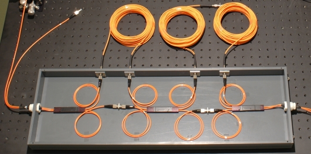

Photon statistics with n>2
Overview
With photon statistics, qualitative statements about the nature of light are possible. In the section existence of the photon - chapter 3, photon statistics up to the photon number n=2 were measured. In this section, an experiment is introduced with which the photon numbers could be resolved up to theoretically n=8. The optical measuring device is known under the name "Time-Multiplexing-Detector" and has been released in 2003 [Ach03], [Fic03]. It is applied for characterising single photon sources and e.g. in quantum cryptography in order to detect specific attacks by a spy (Decoy-State-QKD) [Hwa03], [Mau07].
Chapter 1: |
Set-up of the experiment |
Chapter 2: |
Measuring and analyzing the experiment |
Chapter 3: |
Statistics of the photon pair source |

Experiment for resolving the photon number up to theoretically n=8